Sedona Travel Guide
Known for array of red sandstone formations that appear to glow in brilliant orange and red when illuminated by the rising or setting sun that form a popular backdrop for many activities, including hundreds of hiking and mountain biking trails.
Top Locations
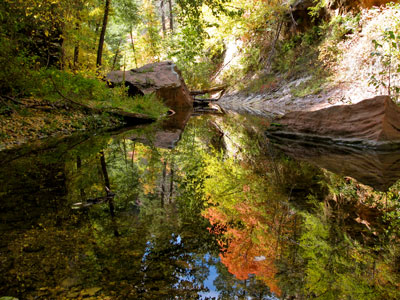
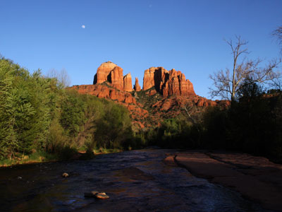
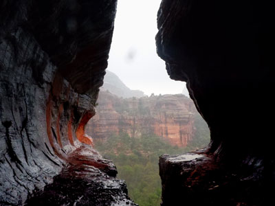
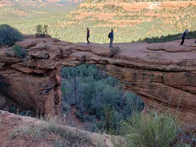
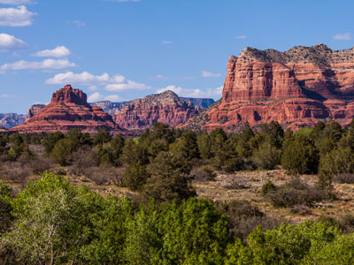
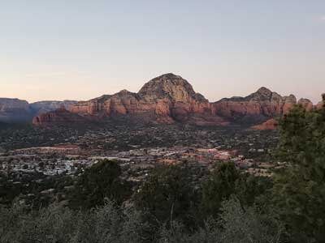
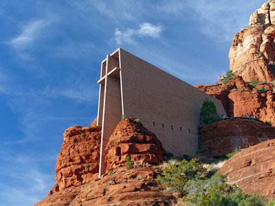
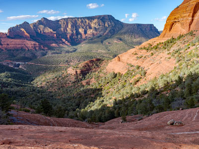
Places to See in Sedona
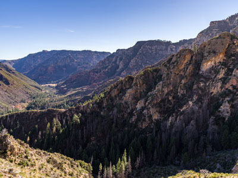
Coconino National Forest, CC0, via Wikimedia Commons; Image Size Adjusted
.jpg){kind=link}
A. B. Young Trail
Trail climbs 1600 feet in 1.6 miles over the 33 switchbacks to the rim of Oak Creek Canyon
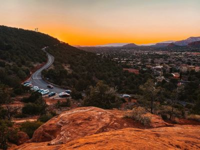
Photo by Michelle Williams on Unsplash; Image Size Adjusted
Airport Mesa
Scenic red rock overlook featuring panoramic views of sandstone formations, desert landscapes, and some of Sedona's most iconic geological landmarks.
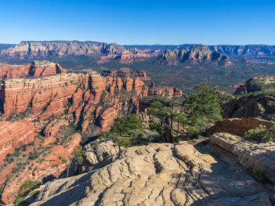
Coconino National Forest, CC0, via Wikimedia Commons; Image Size Adjusted
.jpg){kind=link}
Bear Mountain
Trail ascends over 1,800 ft over the 2.3 mile hike to the top of Bear Mountain, providing spectacular views the entire way
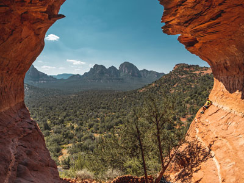
Photo by Jimmy Conover on Unsplash; Image Size Adjusted
Birthing Cave
A shallow sandstone alcove with a distinctive curved opening that frames panoramic desert views and is accessed by a short hike with a brief scramble near the end.
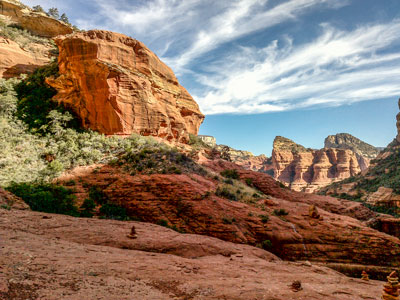
davidpinter, CC BY 3.0, via Wikimedia Commons; Image Size Adjusted
.jpg){kind=link}
Boynton Canyon Trail
One of the most scenic of the box canyons that make Arizona Red Rock Country so famous, enjoying the additional advantage of being conveniently accessible to nearby towns on well paved roads
Tomas Castelazo, CC BY-SA 3.0, via Wikimedia Commons; Image Size Adjusted

Cathedral Rock Trail
Natural sandstone butte on the Sedona skyline and one of the most-photographed sights in Arizona.
Bernard Spragg. NZ from Christchurch, New Zealand, CC0, via Wikimedia Commons; Image Size Adjusted
_(30530128245).jpg){kind=link}
Chapel of the Holy Cross
Roman Catholic chapel built into the buttes of Sedona, Arizona
Tomascastelazo, CC BY-SA 4.0, via Wikimedia Commons

Courthouse Butte and Bell Rock
Loop around the famous Sedona landmarks of Bell Rock and Courthouse Butte, alongside Hwy 179
Devil's Bridge
A scenic desert trail leading to a large natural sandstone arch that can be crossed, offering elevated views over rugged red rock terrain.
Hike to the largest natural sandstone arch in the Sedona area, offering stunning views of the surrounding red rock formations.
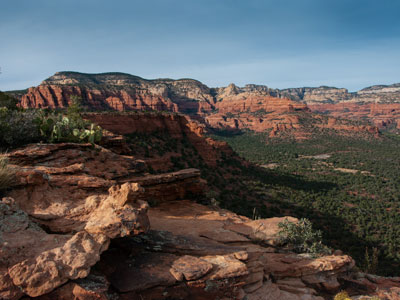
Coconino National Forest, Ariz., CC0, via Wikimedia Commons; Image Size Adjusted

Doe Mountain Trail
Loop around the famous Sedona landmarks of Bell Rock and Courthouse Butte, alongside Hwy 179
Fay Canyon
A gentle canyon trail that winds along a sandy floor beneath towering red rock walls, leading to a quiet natural amphitheater with optional short scrambles to scenic viewpoints.
Scenic hike to a natural arch and stunning views of red rock formations.
deborah.soltesz, CC0, via Wikimedia Commons; Image Size Adjusted
_-_51933523702.jpg){kind=link}
Hangover Trail
A short but steep hike to a unique rock formation that resembles a birth canal.
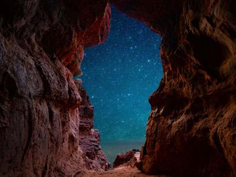
Photo by Tom Gainor on Unsplash; Image Size Adjusted
Keyhole Cave
Short hike to a small cave shaped like a keyhole, with views of surrounding red rock formations.
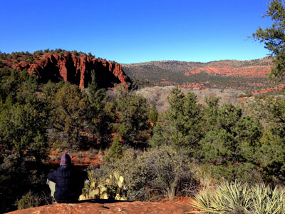
Leslie Seaton from Seattle, WA, USA, CC BY 2.0, via Wikimedia Commons; Image Size Adjusted
.jpg){kind=link}
Red Rock State Park
State park of Arizona, featuring a red sandstone canyon outside the city of Sedona
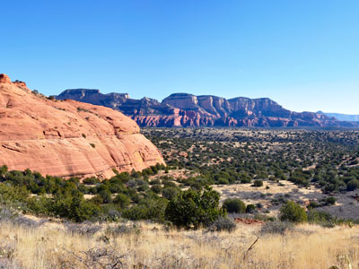
Coconino National Forest, Public domain, via Wikimedia Commons; Image Size Adjusted
.jpg){kind=link}
Robbers Roost
A large sandstone cave tucked into a canyon wall featuring a broad, shaded chamber that offers expansive views across rugged red rock terrain.
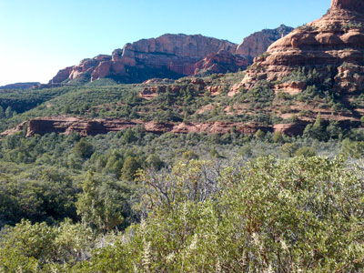
davidpinter, CC BY 3.0, via Wikimedia Commons; Image Size Adjusted
.jpg){kind=link}
Secret Canyon Trail
Moderate length trail leading into the Red Rock-Secret Mountain Wilderness leading to a deep ravine and a series of pools in the solid rock streambed
Sedona Airport Scenic Lookout
Elevated viewpoint offering sweeping panoramic views of red rock formations, desert landscapes, and dramatic sunset scenery.
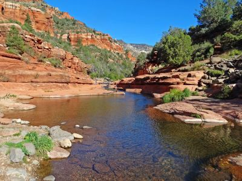
SeanMD80, CC BY-SA 2.5, via Wikimedia Commons; Image Size Adjusted

Slide Rock State Park
State Park located in Oak Creek Canyon with natural water slide formed by the slippery bed of Oak Creek.

SeanMD80, CC BY-SA 2.5, via Wikimedia Commons; Image Size Adjusted
Soldier Pass Trail
Popular desert hiking trail featuring red rock formations, natural arches, seasonal pools, panoramic canyon views, and access to some of Sedona's most iconic landscapes.
Trail features scenic views, rock formations, and a natural sinkhole known as "Devil's Kitchen"
Photo by Walther Nunez on Unsplash; Image Size Adjusted
Subway Cave
A hidden sandstone chamber accessed by a moderate hike that culminates in a distinctive curved cave opening resembling a tunnel carved into the cliff face.
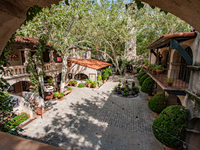
Don Graham from Redlands, CA, USA - God bless it!, CC BY-SA 2.0, via Wikimedia Commons; Image Size Adjusted
.jpg){kind=link}
Tlaquepaque Arts and Shopping Center
Charming open-air complex of courtyards, galleries, and shops designed in traditional Mexican style with fountains, archways, and artisan boutiques.
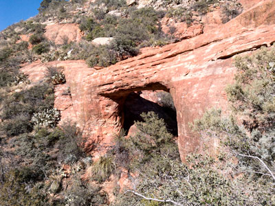
davidpinter, CC BY 3.0, via Wikimedia Commons; Image Size Adjusted
.jpg){kind=link}
Vultee Arch
A large natural sandstone arch set high on a canyon wall, reached by a scenic forested hike that follows a dry creek through rugged backcountry terrain.
Larry Lane; Coconino National Forest, CC BY-SA 2.0, via Wikimedia Commons; Image Size Adjusted

West Fork of Oak Creek
Trail leading the first 3 miles up the West Fork of Oak Creek, a 14-mile long narrow side canyon, is the most popular trail in the Coconino National Forest
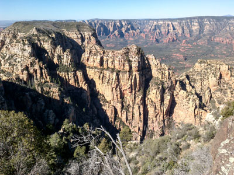
davidpinter, CC BY 3.0, via Wikimedia Commons; Image Size Adjusted
.jpg){kind=link}
Wilson Mountain
Highest peak in the region featuring a long, steep ascent to a broad summit plateau with expansive panoramic views over canyons, cliffs, and desert landscapes.
Overview
Sedona is one of America’s most breathtaking small-town destinations, set in northern Arizona’s Red Rock Country, where towering sandstone formations glow orange and red at sunrise and sunset. It is a popular base for Oak Creek Canyon and the Verde Valley, and a renowned center for art, wellness and outdoor adventure.
Visitors come for hundreds of miles of hiking and mountain biking trails, jeep tours, spas and wellness retreats, art galleries and the area’s famed “vortex” sites, said to be centers of spiritual energy, at places such as Cathedral Rock, Bell Rock, Airport Mesa and Boynton Canyon. The red rocks are Schnebly Hill Formation sandstone deposited during the Permian Period.
Sedona is named for Sedona Arabella Miller Schnebly, wife of the first postmaster. The first Anglo settler, John J. Thompson, arrived in Oak Creek Canyon in 1876, and early residents farmed peaches and apples and raised cattle. The town became a tourist destination, vacation-home and retirement spot in the 1950s. Sedona’s red rocks also starred in more than sixty Hollywood productions from 1923 into the 1970s, mostly Westerns such as Johnny Guitar and 3:10 to Yuma.
Sedona has hundreds of miles of hiking trails for every ability, from easy walks to strenuous scrambles. Popular options include the short, scenic Bell Rock and Courthouse Butte Loop, the steep climb up Cathedral Rock, the red rock arch of Devil’s Bridge, the canyon walk through Boynton Canyon, the creekside West Fork of Oak Creek, and the sinkhole and arches of Soldier Pass. Others include Doe Mountain, Bear Mountain, Fay Canyon, Vultee Arch and Wilson Mountain. Many trails lie in the Coconino National Forest, where a Red Rock Pass is required for parking at most trailheads, and spring and fall are the most comfortable seasons for hiking.
The city of Sedona itself is compact and visitor friendly, with most activities concentrated in Uptown along State Route 89A and in West Sedona. Visitors can browse art galleries, boutiques, Native American jewelry and crystal shops, or shop at Tlaquepaque Arts & Shopping Village. The dining scene ranges from casual cafés and Southwestern restaurants to upscale dining with red rock views, and the area also has wineries and tasting rooms in the nearby Verde Valley. Other activities include jeep and helicopter tours, spa and wellness treatments, golf, stargazing in this International Dark Sky Community, and scenic drives through Oak Creek Canyon.
Sedona is often crowded, and trailhead parking can fill up early, so the city offers a shuttle system to some of the most popular trailheads. The Sedona Shuttle runs on set routes from parking lots and park-and-ride locations to trailheads, which helps reduce traffic and the search for parking at busy areas such as Cathedral Rock. Routes, schedules and fees change from season to season, so visitors should check the City of Sedona website for current information before they go.
Sedona is also famous for its vortexes, places where the earth is said to radiate spiritual energy that promotes healing, meditation and self-reflection. Whether or not visitors believe in the energy, the vortex sites are among the most scenic spots in town. The best-known are Airport Mesa, Cathedral Rock, Bell Rock and Boynton Canyon, and many people visit them at sunrise or sunset to meditate, practice yoga or simply enjoy the views. Local guides, psychics and wellness practitioners offer vortex tours and spiritual services around town.
Top experiences include hiking Cathedral Rock, Bell Rock and Courthouse Butte, Boynton Canyon and West Fork of Oak Creek, visiting the Chapel of the Holy Cross, built into the red rock, and taking jeep tours to backcountry spots such as Broken Arrow and Schnebly Hill. Sunset views from Airport Mesa are among the most popular in town.
Sedona’s culture is centered on art and Native American heritage. Tlaquepaque Arts & Shopping Village is a Spanish-style village of galleries, boutiques and restaurants, and Uptown Sedona offers more shops, Native American art and crystal stores. The Sedona Arts Center, the Sedona Heritage Museum and the Sedona International Film Festival in February add to the cultural scene.
Much of Sedona is surrounded by the Coconino National Forest and its red rock trails. Slide Rock State Park is known for its natural water slide in Oak Creek, and Red Rock State Park offers walking trails, birdwatching and ranger programs along the creek.
Sedona sits at about 4,350 feet and enjoys more than 280 sunny days a year. Summers are hot, with highs of 95°F or more and an occasional monsoon storm, while winters are mild, with highs in the 50s°F and rare light snow that quickly melts on the red rocks. Spring and fall are the most popular seasons for hiking, with comfortable temperatures and colorful scenery.
This article uses material from the Wikipedia article "Sedona, Arizona", along with the Sedona Chamber of Commerce & Tourism Bureau, Arizona State Parks and Coconino National Forest visitor information, and National Weather Service climate data, which are released under the Creative Commons Attribution-Share-Alike License 3.0.
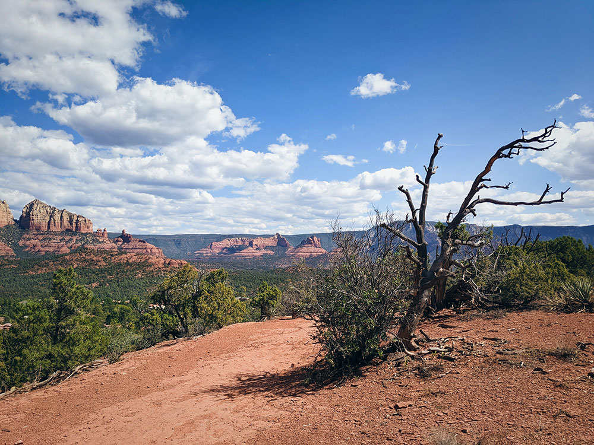

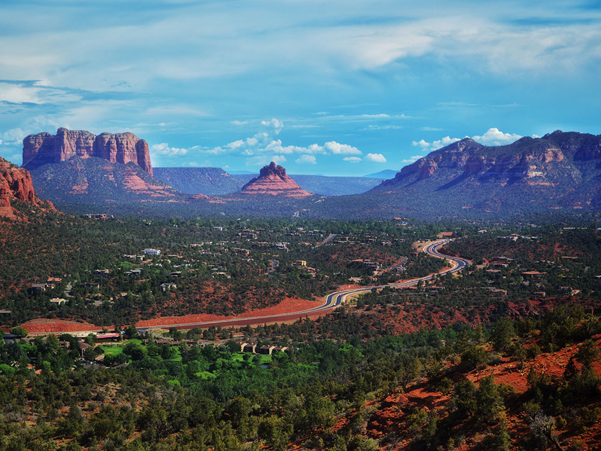
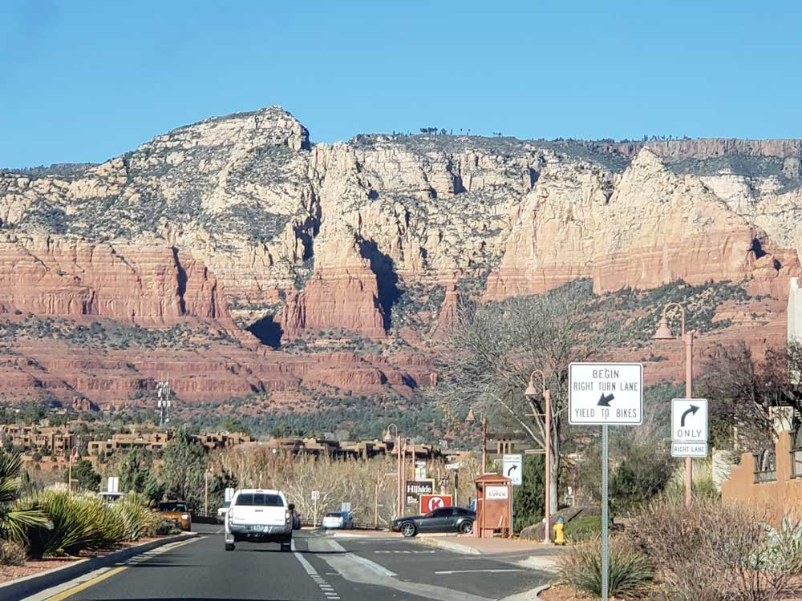
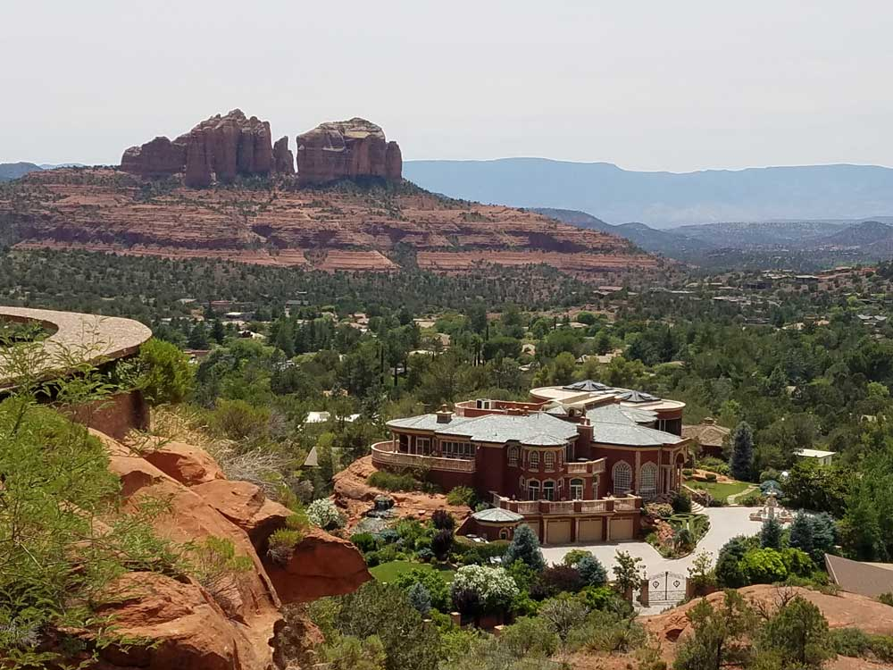
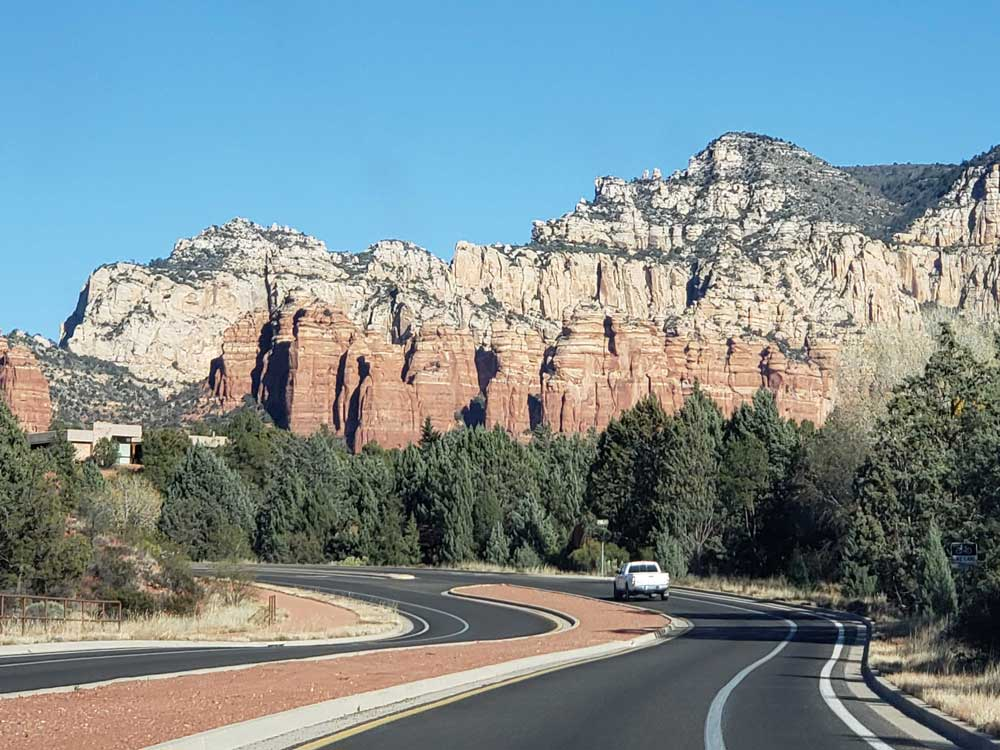
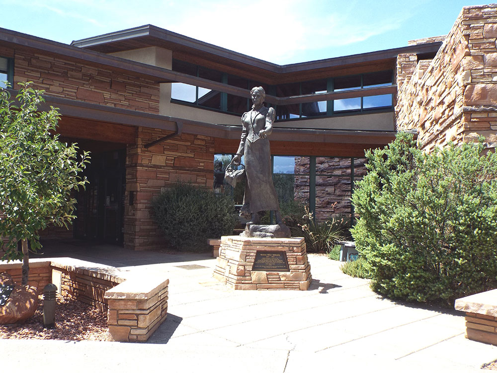

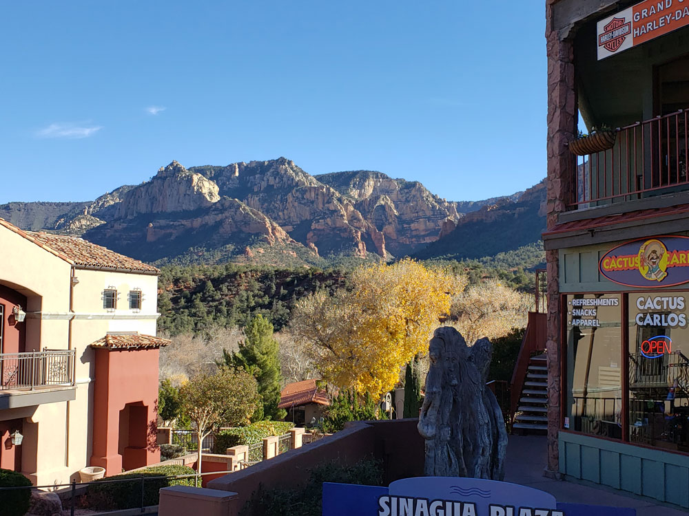


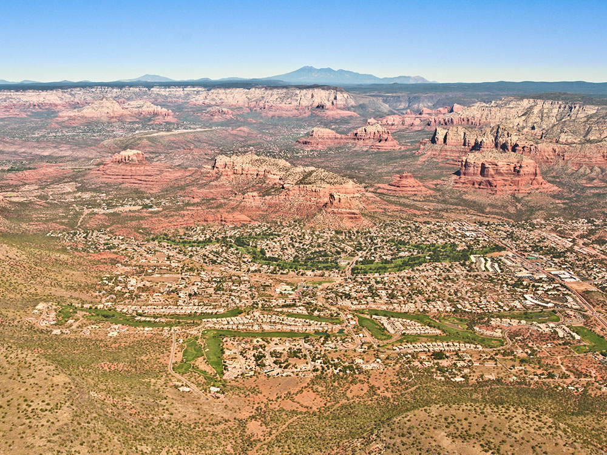
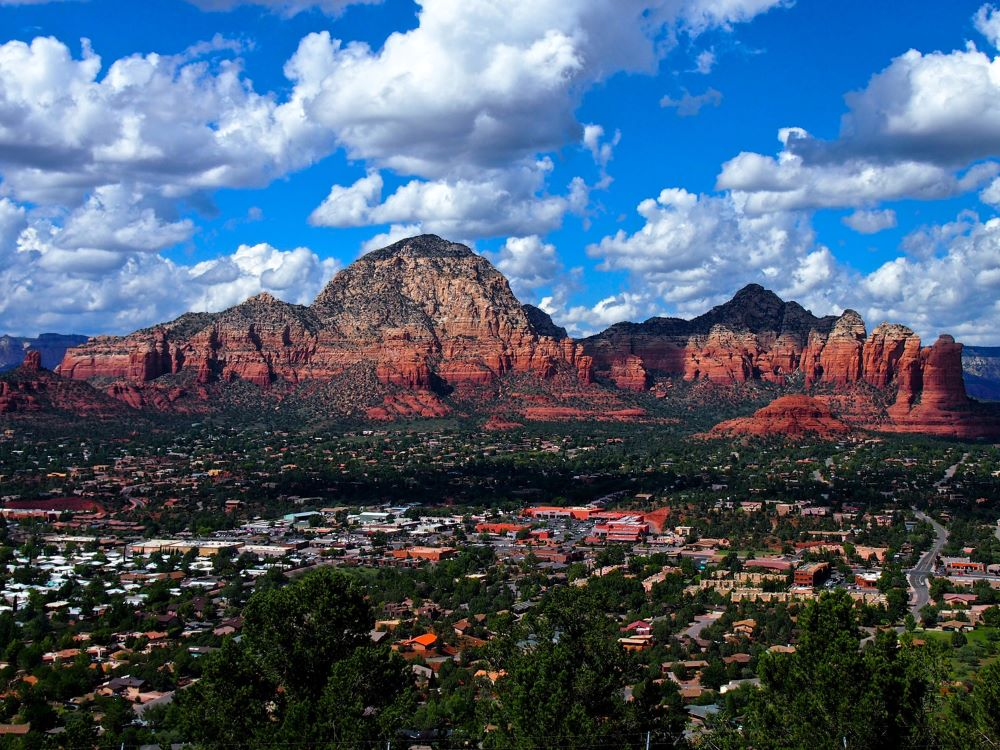